― これまでのイベント（記録） ―
| 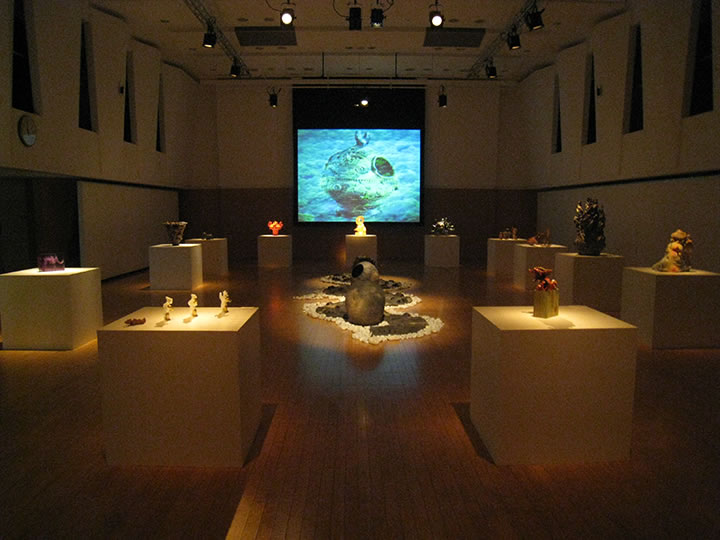 |
| 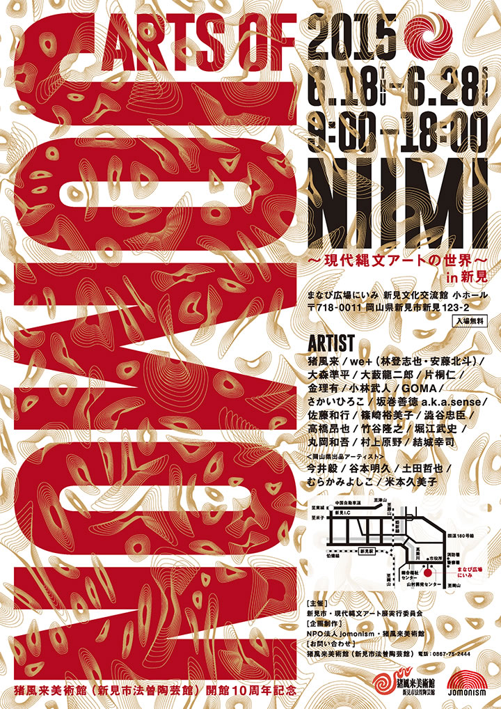 |
| 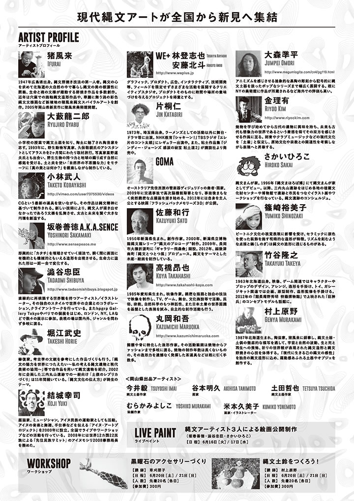 |
| 【ARTs of JOMON in 新見 チラシ】 →PDF版を開く |
日本列島に一万五千年前より花開いた縄文文化が、近年世界から注目を集めています。
考古学での成果は縄文の実像を解き明かしつつあるとともに、その芸術としての造形美の存在を世界に知ら
しめています。
この動きは現在、絵画、彫刻、デザイン、陶芸、織物、音楽、映像、演劇、ファッションなどあらゆる領域
へと広がり、今日では縄文アートを志す多くの若き芸術家達が各ジャンルで活躍しています。
すなわち、縄文のスピリットとインスピレーションに感応して創作するアーティスト達の活動が潮流となり、
現代縄文芸術運動がいま大きく飛躍しようとしているのです。
ARTs of JOMON展は全国の主要な現代縄文アーティストが結集し、日本文化の根源である縄文スピリット
にもとづく現代縄文アート作品を展示し、全国―世界に発信するものです。
これまでに各地で展示が好評を博し、このたびメインアーティストの一人である猪風来の地元・新見市での
開催となりました。
現代縄文アートの新しい時代を拓く作家たちの作品をぜび高覧ください。
=∴=∵=∴=∵=∴=∵=∴=∵=∴=∵=∴=∵=∴=∵=∴=∵=∴=∵=∴=∵=∴=∵=∴=∵=∴=∵=∴=
■参加出品 全国の主要な縄文アーティスト（19名）
岡山県内の縄文作家（5名）
■特別展示 片桐仁作品特設コーナー
JOMO-T展（縄文をテーマにデザインしたＴシャツを展示）
メディアアート（縄文の世界観を醸成した映像作品を上映）
■公開制作 ライブペイント（縄文アーティスト3人による絵画）
6月16日（13：00 - 17：00）～17日（10：00 - 17：00）
渋谷忠臣・坂巻善徳 a.k.a sence／さかいひろこ
■オープニングセレモニー・キュレーターによる作品解説
6月18日 9：00 -
■縄文ワークショップ（各先着20名 参加費300円）
6月20日／21日 10：00 - 15：00
黒曜石のアクセサリーづくり（講師：草刈朋子）
縄文土鈴をつくろう！（講師：村上原野）
■主催 新見市・現代縄文アート展実行委員会
■企画制作 猪風来美術館・NPO法人jomonism
=∴=∵=∴=∵=∴=∵=∴=∵=∴=∵=∴=∵=∴=∵=∴=∵=∴=∵=∴=∵=∴=∵=∴=∵=∴=∵=∴=
| 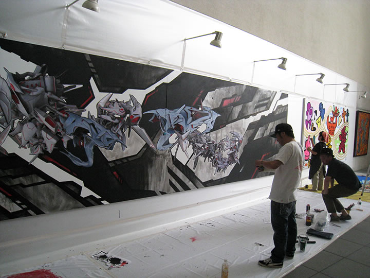 | |
| 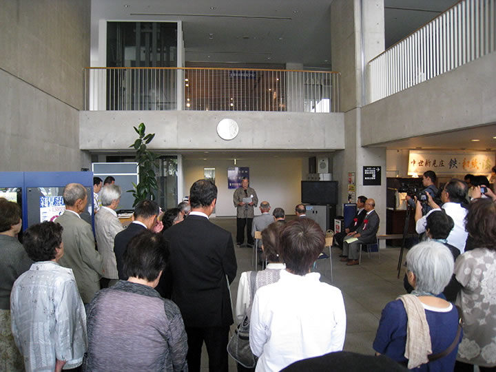 | 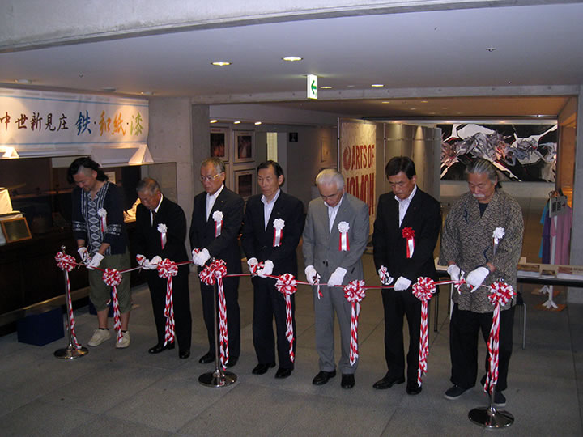 |
| 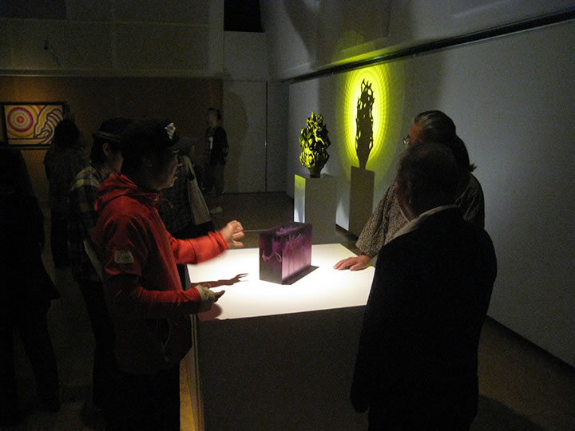 | 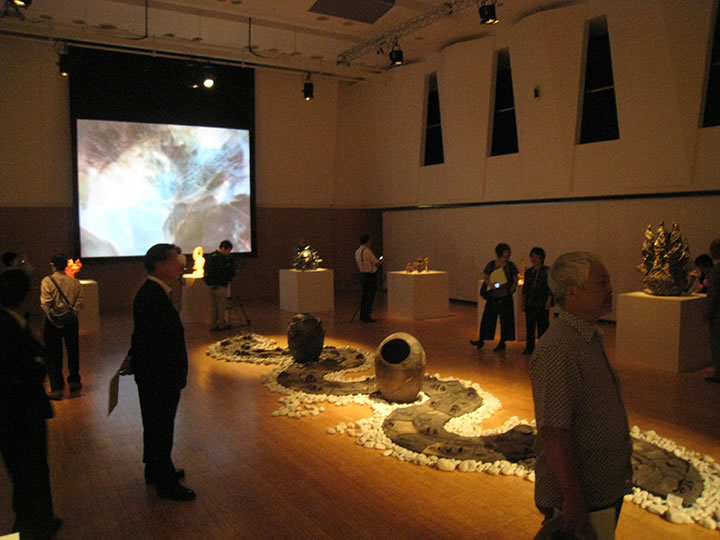 |
| 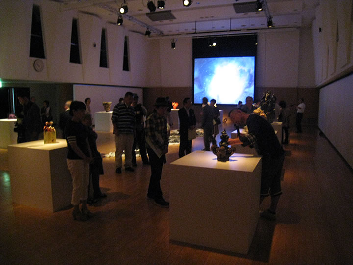 | |
| 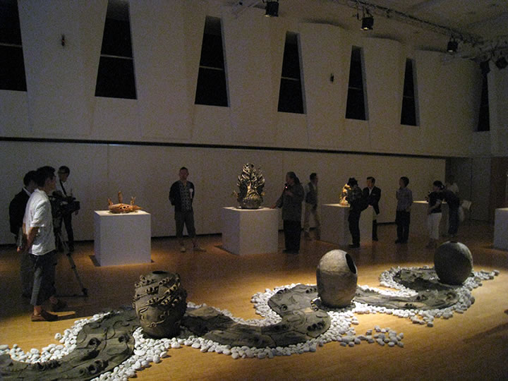 | |
| 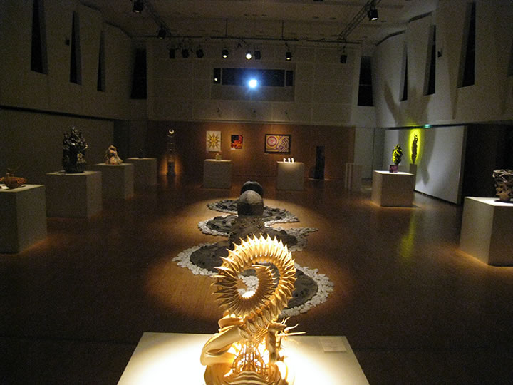 | 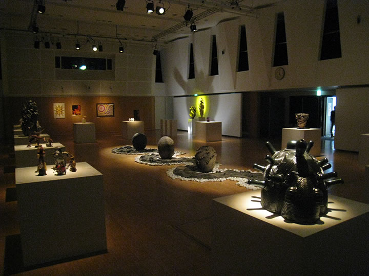 |
| 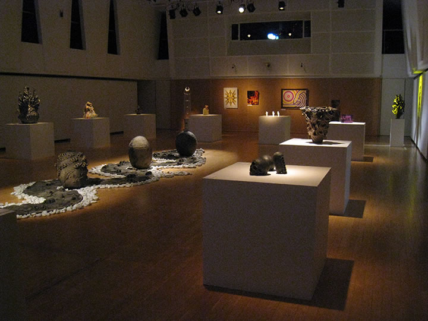 | 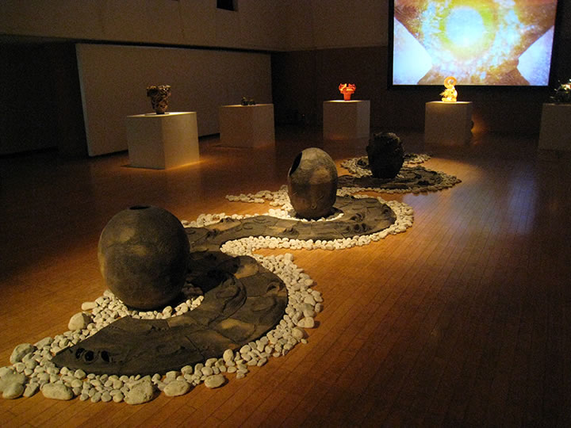 |
| 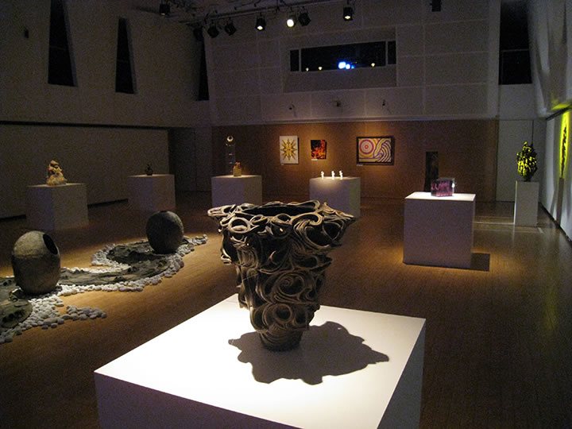 | |
| 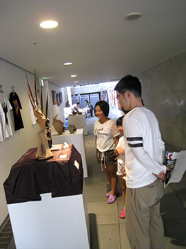 | 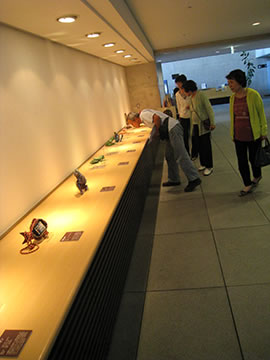 |

|
|
| 【ARTs of JOMON in新見 会場写真】（画像をクリックで拡大します） | |
| 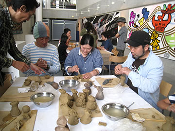 | 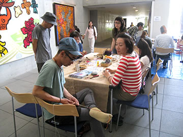 |
| 【ARTs of JOMON in新見 ワークショップ】（画像をクリックで拡大します） | |
=∴=∵=∴=∵=∴=∵=∴=∵=∴=∵=∴=∵=∴=∵=∴=∵=∴=∵=∴=∵=∴=∵=∴=∵=∴=∵=∴=
| 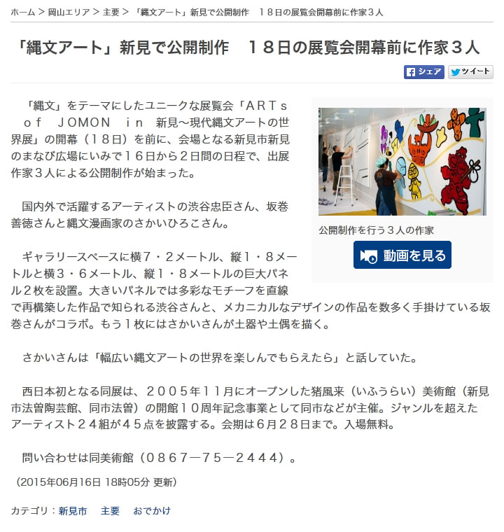 | 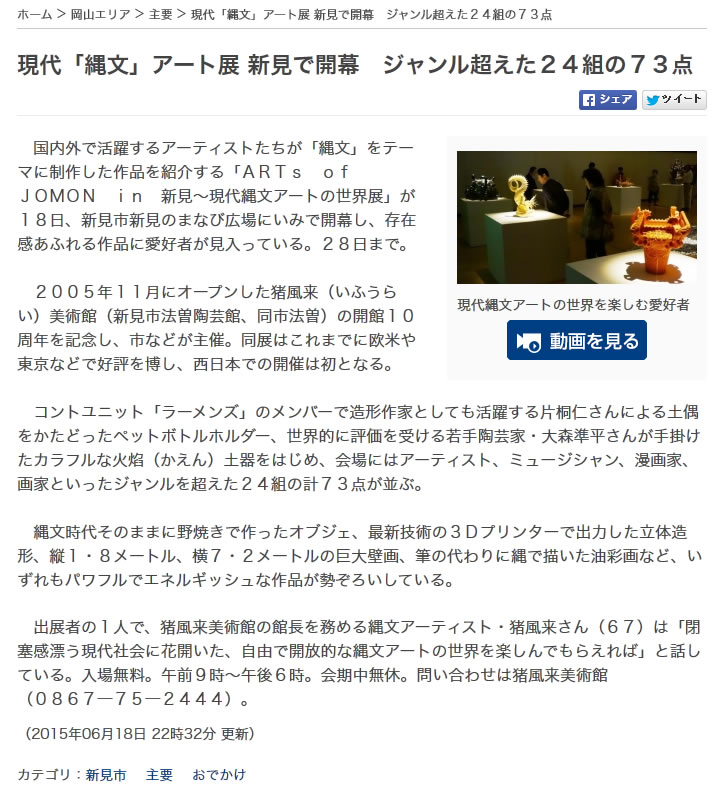 |
| 【山陽新聞 digital 2015.06.16】 （クリックで記事を開きます） |
【山陽新聞 digital 2015.06.18】 （クリックで記事を開きます） |
| 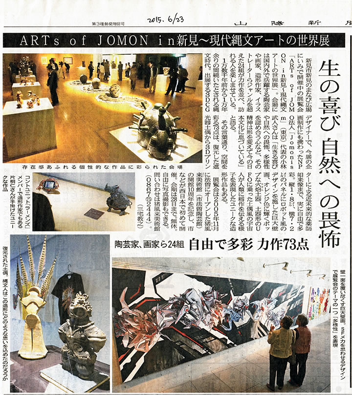 |
| 【山陽新聞 2015.06.23】（画像をクリックで拡大します） |
| 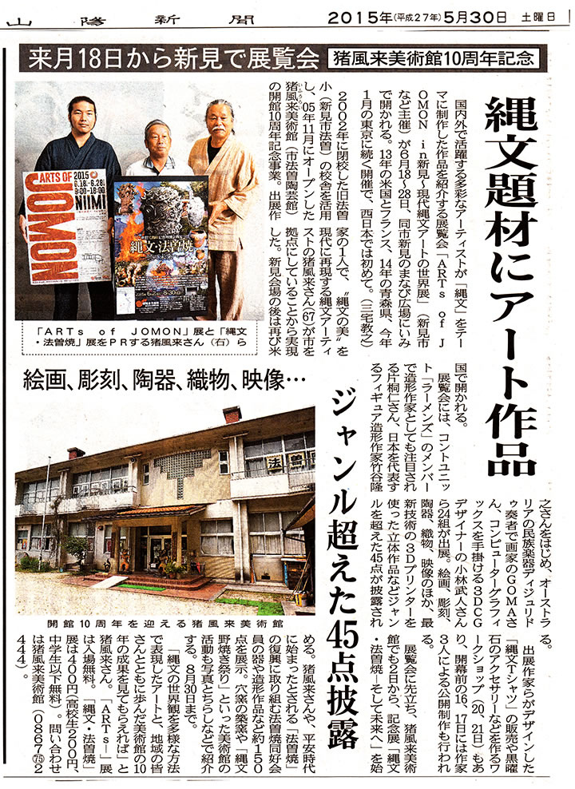 |
| 【山陽新聞 2015.05.30】（画像をクリックで拡大します） |
=∴=∵=∴=∵=∴=∵=∴=∵=∴=∵=∴=∵=∴=∵=∴=∵=∴=∵=∴=∵=∴=∵=∴=∵=∴=∵=∴=